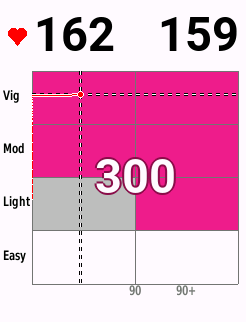
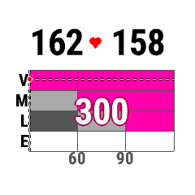
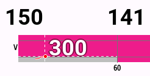
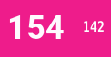

Garmin Connect IQ Data Field
Real-time Vitality fitness points prediction — while you're riding or running.
User Manual · V1.0
Discovery Vitality Points is a Garmin Connect IQ data field that estimates your Discovery Vitality fitness points in real time — while your activity is still in progress. It shows you exactly which points tier you have locked in, and precisely what you need to do to reach the next one.
The points model follows Discovery's published heart rate zone and time-band rules. Your age (read from your Garmin profile or entered manually) determines your maximum heart rate, which in turn sets the thresholds for each HR zone.
The data field always shows three things:
On larger display slots, these are shown in a full activity chart. On smaller slots, two large numbers plus a guidance line are shown instead.
Discovery awards fitness points based on two factors: how hard you exercised (heart rate zone) and how long you exercised (duration). The matrix below shows the points tiers.
Standard points matrix — HR zone vs. duration. Hot pink = 300 points (goal tier).
Your maximum heart rate is calculated as 220 − age. The four zones are:
| Zone | HR range | Typical feel |
|---|---|---|
| Vigorous | ≥ 70% max HR | Hard effort — you can speak in short phrases only |
| Moderate | 60–70% max HR | Sustained effort — comfortably hard |
| Light | 50–60% max HR | Easy effort — can hold a full conversation |
| Easy | < 50% max HR | Very light activity — warm-up or cool-down pace |
Members registered on Discovery's Endurance & High Performance programme can earn extended tiers of 450 and 600 points. Enable the Endurance Athlete setting to unlock these tiers in the data field.
| Points | Zone required | Duration required | |
|---|---|---|---|
| 100 | Vigorous 15 min or Moderate 30 min | — | Standard |
| 200 | Vigorous 30 min or Moderate 60 min | — | Standard |
| 300 | Vigorous 60 min+ or Moderate 90 min+ | — | Standard |
| 450 | Extended duration at Vigorous/Moderate | — | Endurance |
| 600 | Extended duration at Vigorous/Moderate | — | Endurance |
The data field automatically selects the appropriate layout based on the size of the slot you've assigned it to. You don't need to configure this — it adapts automatically.
Triggered on full-screen or large data field slots (roughly 220 × 150 pixels or larger). This is the primary layout and shows the most information. On rectangular devices (Edge series) the chart fills the whole slot; on round watches (Forerunner, fēnix) it is inscribed within the circular display.

Chart layout on Edge 840 (1-field slot, 246 × 322) — 300 pts locked in. Full zone × time grid with trend line.

Chart layout on Forerunner 745 (full-screen, 240 × 240 round) — 300 pts, chart adapted for circular display.
Triggered on medium slots (roughly 200 × 100–150 pixels). Shows a zoomed view of the matrix centred on your current zone row, with partial rows above and below for context.

Standard layout on Edge 840 (5-field B, slot 2, 246 × 126) — current zone row fills the centre.
Triggered on small slots (under 200 × 100 pixels, or narrow half-width tiles). The chart is replaced with two large configurable numbers and a guidance line. The entire background fills with your current points colour, making your tier immediately recognisable at a glance.

Tile — 122 × 63Compact (246 × 63) and tile (122 × 63) slots on Edge 840 5-field B — background fills with tier colour.
The chart layout is the heart of the data field. Here's what each element means.
Annotated chart layout — each element explained.
The guidance line is shown below (or inside) the chart and gives you two actionable numbers:
In Target Points guidance mode, these are calculated relative to your chosen target rather than the next tier up.
When Show tier headroom is enabled, an additional indicator shows how many bpm your average HR can drop before you lose your current tier. This is useful when you want to ease off the pace without risking slipping back to a lower tier.
Access settings in the Garmin Connect app on your phone: navigate to your device → Data Fields → select the field → Settings. Or on the simulator via Object Emulator → Settings.
Age drives the maximum HR calculation (220 − age), which sets all zone thresholds. Getting this right matters — an incorrect age will cause all zones to be slightly off.
| Setting | What it does |
|---|---|
Age Source Default: User Profile |
Whether age is read automatically from your Garmin user profile (User Profile) or entered manually. User Profile is recommended — it updates automatically on your birthday. |
Birth Year / Month / Day Default: 1980-01-01 |
Your date of birth, used when Age Source is set to Manual. Age is calculated from today's date, so it increments correctly on your birthday. |
Manual Age Default: 49 |
An alternative to date of birth — enter your age in years directly. Only used if Age Source is Manual. Use Birth Year/Month/Day instead if precision matters. |
| Setting | What it does |
|---|---|
Primary Display Default: Points |
The large central number shown on chart layouts. Options: Points, Average HR, Current HR. Points is recommended — it shows your tier number large and clear. |
Compact: left value Default: Current HR |
The left large number on compact and tile layouts. Options: Current HR, Average HR, Points. |
Compact: right value Default: Average HR |
The right large number on compact and tile layouts. Options: Current HR, Average HR, Points. |
Show Zone Label Default: On |
Shows the current HR zone name (VIGOROUS / MODERATE / LIGHT / EASY) as a text label. Useful on standard-size slots. Turn off to reduce clutter on small screens. |
Show HR Guidance Default: On |
Includes the bpm target in the guidance line (e.g. ▲ 6 bpm). Turn off if you only want the time component. |
Show Tier Headroom Default: Off |
Adds a downward indicator showing how many bpm your average HR can fall before you drop a tier. On tall layouts this appears as a second line below the main guidance. Useful for recovery rides where you want to ease off without losing points. |
| Setting | What it does |
|---|---|
Guidance Mode Default: Next Tier |
Next Tier — guidance always shows what you need to reach the next points band above your current one. Target Points — guidance shows progress toward a specific points goal (set via Target Points below). |
Target Points Default: 300 |
The points value to aim for when Guidance Mode is set to Target Points. Options: 100 / 200 / 300 / 450 (Endurance) / 600 (Endurance). |
Endurance Athlete Default: Off |
Enables the 450 and 600-point extended tiers for members registered on Discovery's Endurance & High Performance programme. When on, the colour ramp extends to 600 pts, with hot pink reserved for 600 pts (your goal tier). Registration required: discovery.co.za/vitality/endurance-high-performance-events |
| Setting | What it does |
|---|---|
HR Axis Labels Default: Names (V/M/L/E) |
Labels on the vertical (HR zone) axis of the chart. Off — no labels, maximum chart space. Values (bpm) — shows exact bpm thresholds for each zone boundary. Names (V/M/L/E) — shows zone abbreviations. Clean and readable. Both — zone names and bpm values together. |
Crosshair Default: White |
Colour of the dashed crosshair lines that mark your current position in the chart. Options: Off / Black / White / Red / Blue / Yellow / Green. White is the default and works well against all pink cell backgrounds. |
Points number glow Default: On |
When on, a tight glow halo is drawn behind the points number in a contrasting colour, lifting it off the chart matrix in all conditions. Turn off for a subtler, quieter look. |
Colour: 100 pts band Default: Charcoal |
Fill colour for cells in the 100-point tier of the chart. |
Colour: 200 pts band Default: Vitality Silver |
Fill colour for cells in the 200-point tier of the chart. |
Colour: 300 pts band Default: Hot Pink |
Fill colour for cells in the 300-point tier (the goal tier for standard athletes). |
Colour: 450 pts band Default: Pale Pink Endurance |
Fill colour for the 450-point stepping-stone tier. Only relevant when Endurance Athlete is enabled. |
Colour: 600 pts band Default: Hot Pink Endurance |
Fill colour for the 600-point goal tier. Only relevant when Endurance Athlete is enabled. Hot pink by default — the goal tier always glows brightest. |
| Setting | What it does |
|---|---|
Point change tones Default: On |
Plays a beep through the device speaker whenever your predicted points tier increases or decreases. Useful if you want audio feedback without looking at the screen. |
Point change alerts Default: On |
Shows a full-screen overlay message when your points tier changes (e.g. "300 points!"). Requires Activity Alerts to be enabled for this data field in your device settings. |
| Setting | What it does |
|---|---|
Validation Mode Default: Off |
Overlays the layout tier name and debug information on the screen. For development use only. Leave this off for normal use. |
The default colour palette is inspired by Discovery Vitality's branding. The progression moves from neutral to silver to hot pink — quiet when you're building, unmistakable when you've hit your goal.
When Endurance Athlete is enabled, the ramp extends to 600 pts. Charcoal and silver carry through at the base, a pale pink stepping stone appears at 450, and hot pink is reserved for 600 pts (your goal tier).
This data field estimates Discovery Vitality fitness points using Discovery's published HR-zone and time-band rules. Official Vitality points are awarded by Discovery after your activity syncs to their platform, and the final tally may differ.
Common reasons for differences: HR data that doesn't transfer cleanly to Discovery's platform from Garmin Connect or Strava; activities that use HR from a chest strap vs. optical sensor; or minor rule changes by Discovery.
This app is not affiliated with or endorsed by Discovery or Garmin.